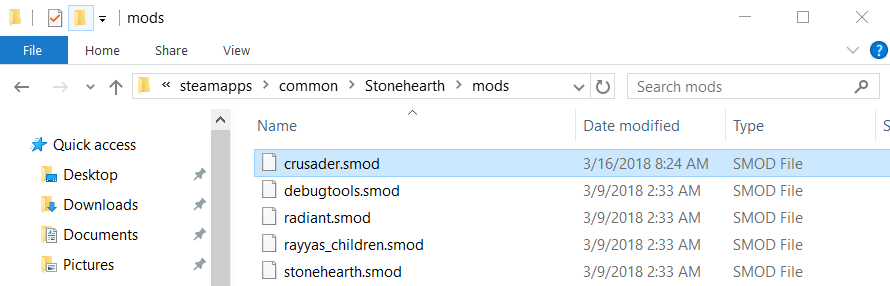
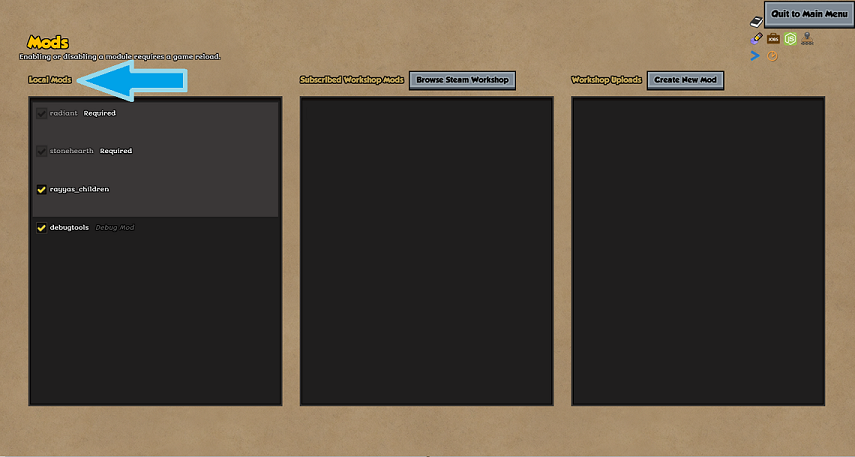
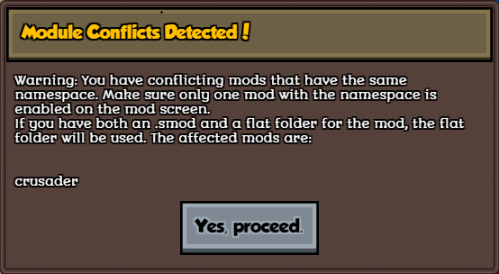
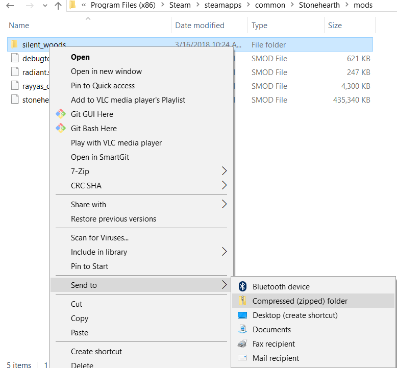
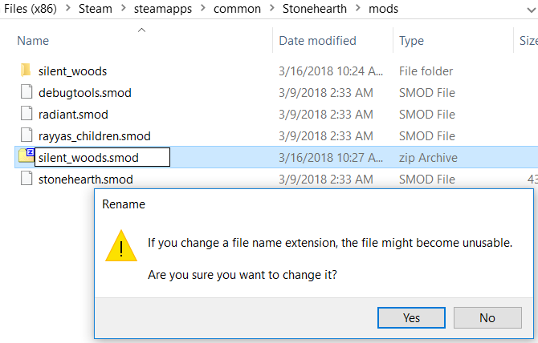

We call "local" mods to any mods that have to be installed and updated manually by the players. Steam Workshop mods are automatically updated, and require extra steps for uploading, so they have their own page in this guide.
Instructions for installing mods manually:
When you manually download a new mod, it is usually in the form of a ".smod" file. This is a compressed file that contains everything the mod needs to function. Download this file and place it into the "mods" folder of your Stonehearth installation:
- If you installed the game with the Humble Bundle installer, this will normally be at
C:\Program Files (x86)\Stonehearth\mods. - If you have installed it via Steam, then the mods folder will be at
C:\Program Files (x86)\Steam\steamApps\common\Stonehearth\mods.

Once you have placed the mod inside this folder, then all you need to do is start the game, and the mod should be active.
If it isn't, go to the Mods menu from the main menu, and make sure the mod is checked in the "Local Mods" list.


Other formats
If the mod was provided with an extension other than ".smod" (such as ".zip, or ".rar") you will need to uncompress it.
The game can read mods in ".smod" format or in plain folders. If you have both for the same mod, it will prefer reading the plain folder.
If later you updated the .smod, but still having the plain folder, you will get a conflict, since the game will load the plain folder, which doesn't contain the latest version of the mod. This is especially important for the stonehearth mod, if you have it both as plain folder and as .smod, and Steam updates the game, you might get errors, and you will not see the new content. Delete the plain folder to solve this problem.

 Make sure that if you uncompress a mod, it doesn't create an inner folder with the same name, otherwise the game won't be able to load the mod properly. Copy and paste the files on the outer directory to solve this problem.
Make sure that if you uncompress a mod, it doesn't create an inner folder with the same name, otherwise the game won't be able to load the mod properly. Copy and paste the files on the outer directory to solve this problem.
Bad unzipping:
 Good unzipping:
Good unzipping:

Mods from the Steam Workshop are uploaded/downloaded as plain folders, so you shouldn't have these issues with them.
Instructions for uninstalling mods manually:
If you manually downloaded a mod from an external site, you'll have it placed inside your mods folder. With the game closed, navigate to that directory and delete the corresponding mod's folder or .smod file. Then restart the game.
Bear in mind that savefiles that were made with that mod active will throw errors if you try to load them after uninstalling it (same if you disable the mod instead of deleting it).
Instructions for uploading mods manually:
After you finish making your mod, it's time to package it for easier sharing. While being in the mods folder, select your mod folder, right-click it and zip it.
Then rename it so that the extension is .smod instead of .zip (you will get a warning from Windows when changing the extension, just click Yes). That way it'll be faster to install for players.
Test it again with the smod file only, to check that it is being loaded fine.
 
Don't rename the zip/smod file after compressing your mod folder. The manifest might become invalid because the inner path doesn't match.
Then, upload it to the place of your choice.
For updating local mods, you need to replace the entire .smod file / plain folder by hand with the new version for that mod.
Instructions for uploading building templates as a mod:
The Mods menu includes an easy way to redistribute a pack of building templates as a mod.
First create a mod with a basic manifest. Then, create a folder inside your mod's folder and name it "building_templates":

In your manifest, add "is_building_template_mod" : true inside your manifest's "info" section and save the changes (remember to add commas where needed):
{
"info": {
"name": "My Templates Mod",
"namespace": "my_templates",
"version": 3,
"is_building_template_mod" : true
}
}
Now in the Mods menu, hover over your mod and click on the "Edit this mod's list of templates" button, which has an icon for editing templates.
A new window will appear and let you choose from your existing building templates:

 The templates will be copied to your mod, but they won't be deleted from the main game. If you later decide to add other templates, or remove some of them your mod, you can do so through this menu too (only the templates from your mod will be affected by the deletion).
The templates will be copied to your mod, but they won't be deleted from the main game. If you later decide to add other templates, or remove some of them your mod, you can do so through this menu too (only the templates from your mod will be affected by the deletion).
Once you click 'OK', a confirmation dialog will appear:
 In the mods list, there will be an arrow button at the right for the mods that have building templates. Clicking on it will expand / collapse the list of templates that the mod has (which is convenient if you need to see which templates are in which mod):
In the mods list, there will be an arrow button at the right for the mods that have building templates. Clicking on it will expand / collapse the list of templates that the mod has (which is convenient if you need to see which templates are in which mod):


Lastly, remember to zip your mod and upload it like explained in the above section.
If you compress your mod, you won't be able to view / edit its templates from the Mods menu. First you'll need to uncompress it.
The game will show the templates from these mods in the building editor's template list as expected.